The aim of this project is to create one touch-based and one sensor-based interface for unlocking a phone. It should prevent accidental activation, and be as creative as possible.
Initial Sketches
Sensor-based
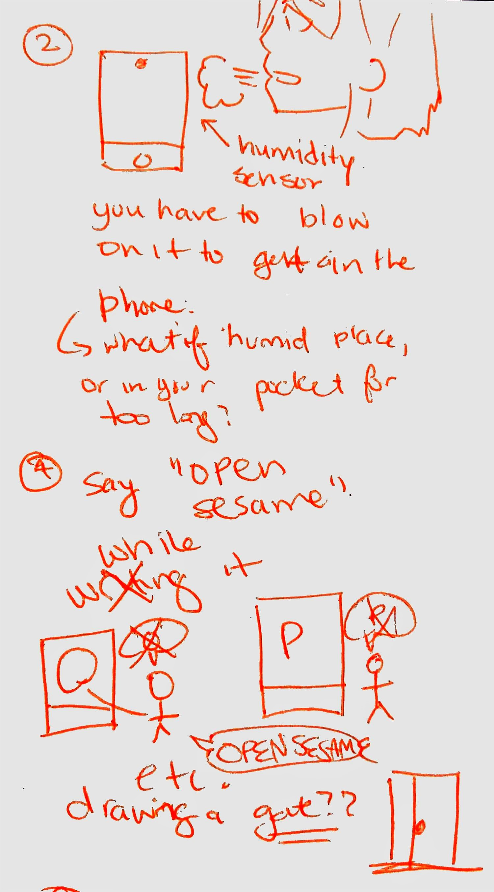
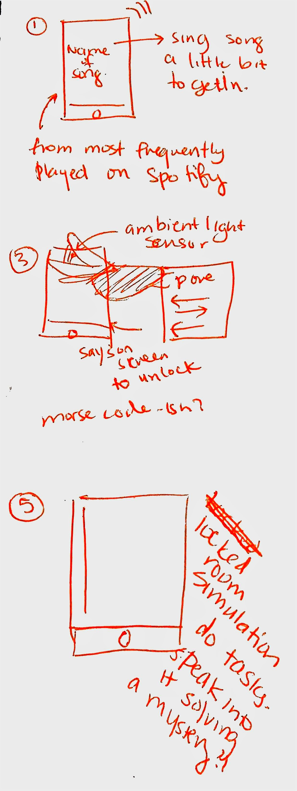
My initial sketches for sensor-based ways to open my phone are as follows:
The phone will display the name of a song from the user's Spotify favourites list, and the user will have to sing the first line of the song.
The user will see a picture of a shiny glass on the screen and the user will have to blow on the mic to "cloud up" the screen. Once it's all fogged up, the user will be able to get in.
The user will move their finger up and down over the ambient light sensor in a pre-determined morse code pattern to unlock their phone.
The user will say "Open Sesame!" That likely doesn't come up much in conversation and would be fun!
The user will be in a locked room and will have to speak into the phone to answer questions to unlock the phone, a puzzle.
My intent was that since they will be using the sensor - minimizing any other type of interaction will make it nicer.
I really liked the "Open Sesame!" one since it was fun and convenient, but also it wouldn't be that weird if somebody said it out loud. Mostly eccentric.
Touch-based
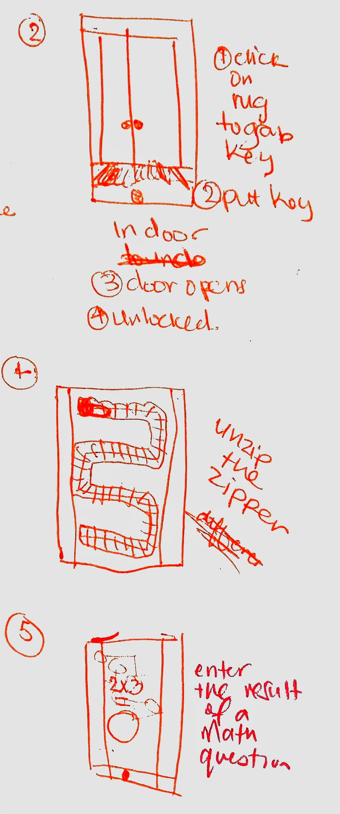
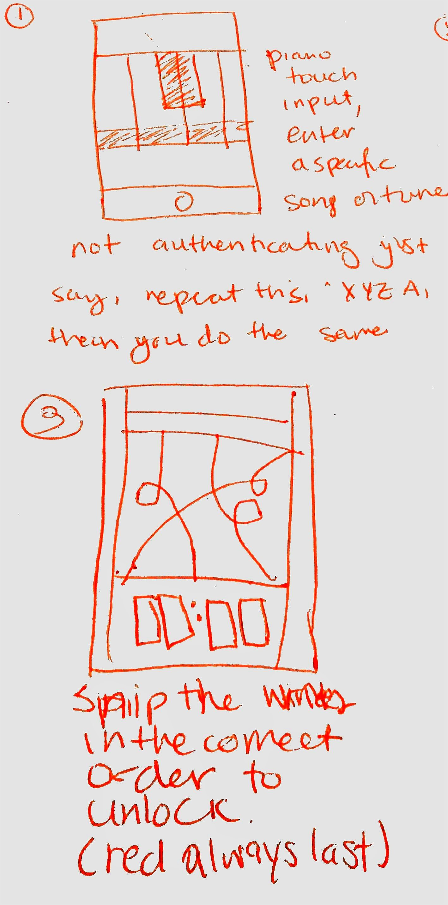
My initial sketches for touch-based ways to open my phone are as follows:
User enters a tune with four piano keys available that they've previously set. Or perhaps given a prompt of a tune and then must match it.
An image of a closed door to a house, with a rug on the bottom. The user clicks once on the rug to grab the key, then click on the keyhole to unlock the door to get in their phone.
Cut the wires of a bomb in the order that is shown on the top of the screen, based on colours! Any wrong cut and your phone "explodes" and you try again.
Have a different shaped zipper each time you want to unlock the phone. You have to unzip the zipper.
You are asked a math question, and you have to draw the resulting answer.
I wanted to have 2 touches at a minimum for these to prevent accidental activation. My favourite was the one with the door, because it's simple and obvious, and meta and funny.
Refined Sketches
We decided on Daniel's clock design for touch-based input, since it was simple, intuitive, informative, and looked like it was actually meant to be a lockscreen, since they usually display the time.
The basic design for this was to have an analog clock that shows a random time, and it needs to be matched to the actual time at the moment to unlock the phone.
For the sensor-based input, we decided on Max's design that had some text and the user would have to speak something that was prompted from the text.
If it matched, it would let you in.
After this, we split up to ideate further. Here are those sketches:
Me
Some of my best refined ideas were:
SENSOR: Getting a prompt in another language, and having to speak into it in English. Like a learning practice tool.
SENSOR: Being prompted with a combination of three words that wouldn't normally be used together, and having to say them.
SENSOR: Getting a chemical formula and having to say it out loud! Funny... but mean hahaha unless it was for studying.
TOUCH: Getting the time as a set of numbered option to swipe through to match to the actual time.
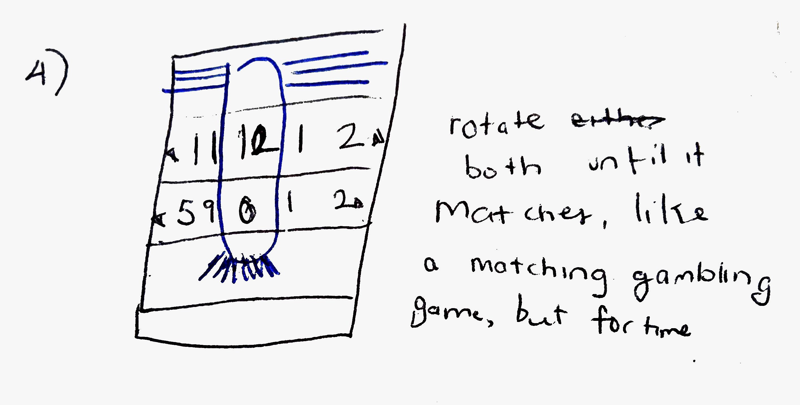
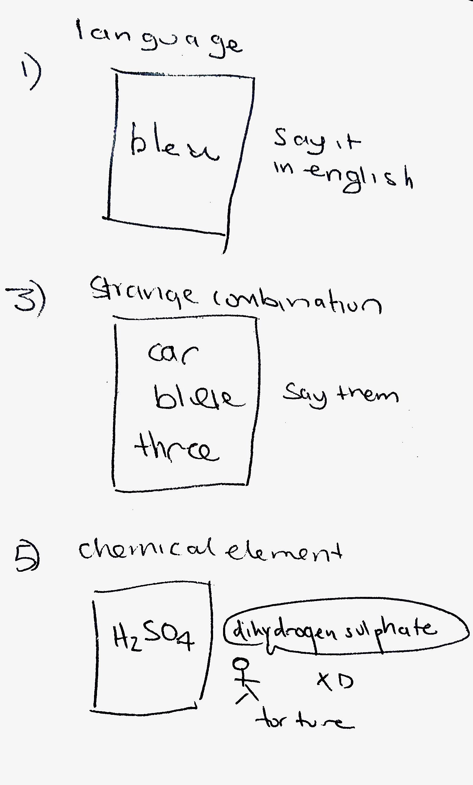
SENSOR: This asks you today's date, or the day of the week, or the year, or your city, that you have to correctly answer.
TOUCH: The current time is on this analog clock, and another set of hands appear that need to be matched to the hands.
It's simpler and easier to match with a visual reference.
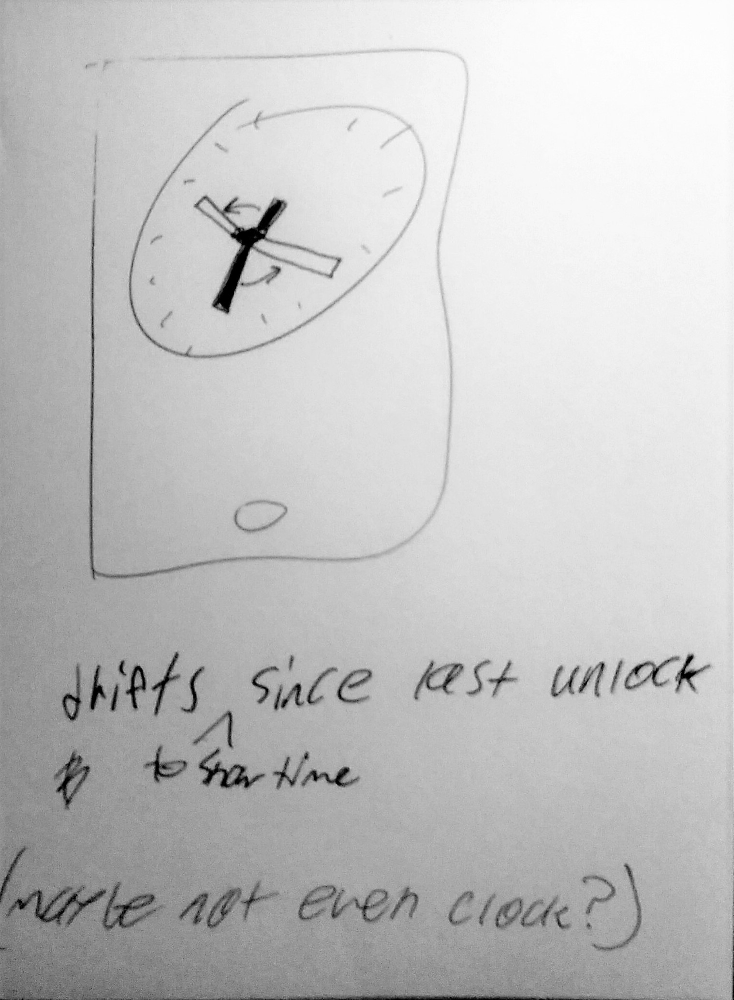
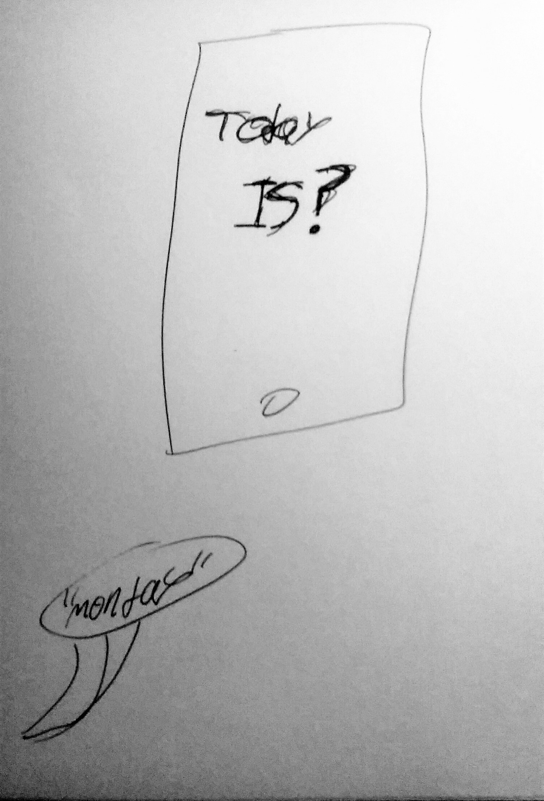
SENSOR:Snap the tune of a song that you are prompted.
TOUCH:The time is like a bar that needs to be filled up. Touch it to get it to the right "level" or time.
TOUCH:The time is organized radially and the user must touch the circle to enlarge or diminish the red circle that is the time that needs to be matched.
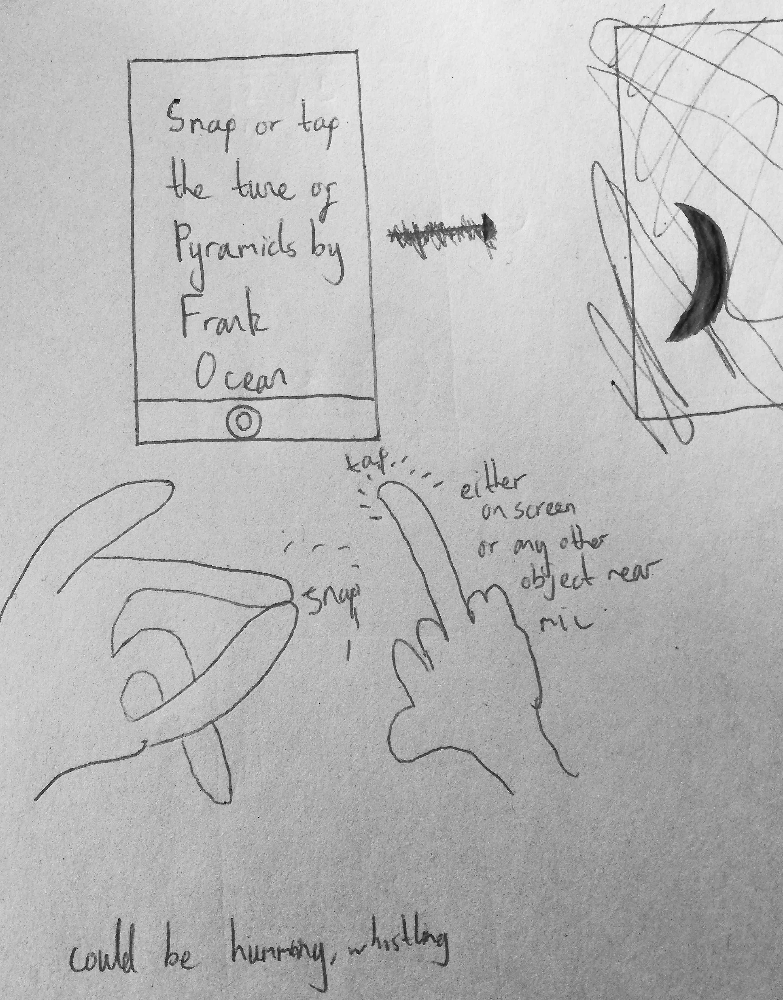
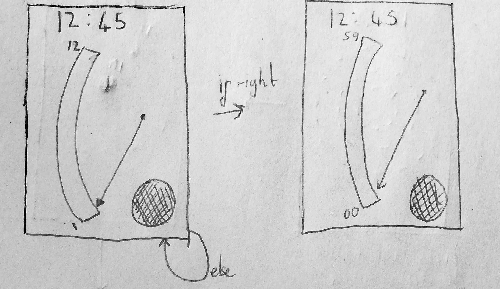
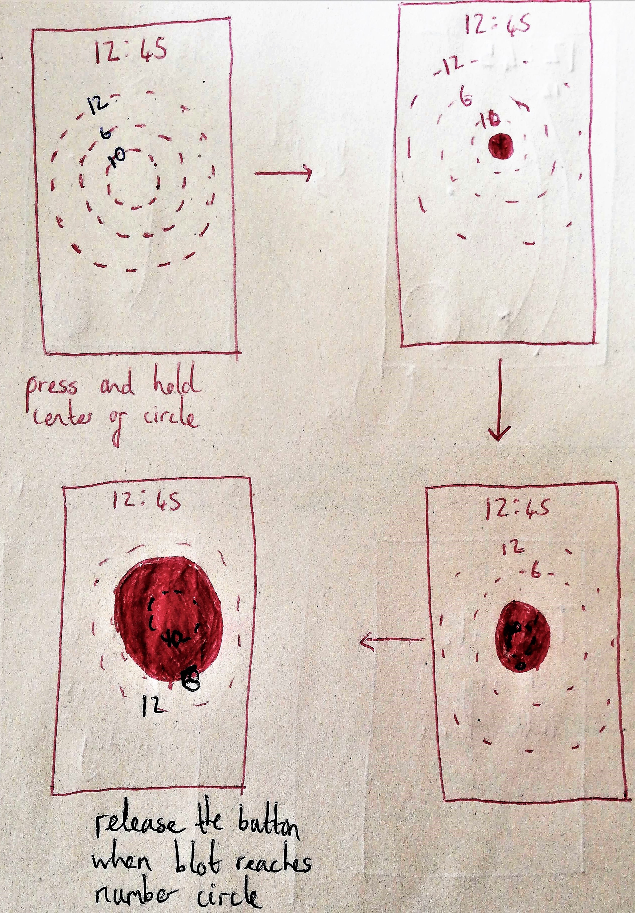
TOUCH: Hold and drag minute hand to current time. Hold and drag hour hand to current time.
SENSOR: Get a French prompt, and speak in French for practice, if correct, unlocked.
SENSOR: Speak the word to fill in a song lyric.
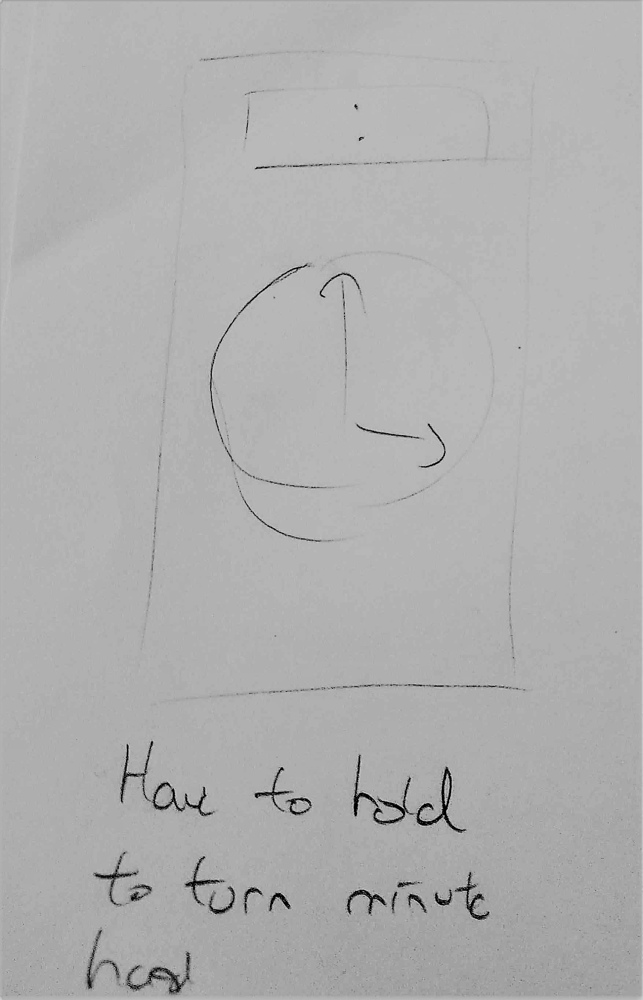
Software Implementation
We eventually decided on a sensor-based design - where the user must speak the word they are prompted in another language - as follows:
We restricted audio input to one word so that the interaction is quick and natural.
We wanted to show a microphone so that the user would quickly realize they need to speak the word that they are given.
We combined two refined ideas of translation, and chose the one where the user speaks the foreign word instead of translating it, since it might be harder to grasp from using it that it needs to be translated. This makes the interaction more learnable and obvious.
Given the correct word, the user is given a positive reinforcement by making the colour blue, and then given the meaning of the word, so they can learn. We decided on this so that it can be a learning tool, and also so the interaction feels like a game.
Given an incorrect word, the user is given negative reinforcement by making the colour red and then given a new word, this clearly indicates they should try again. This way they can clearly see the progress of the unlock and always have feedback on their interaction.
We eventually decided on a touch-based design - where the user matches the hands by touching the clock one hand at a time - as follows:
We chose to use the multiple hands design so the user does not have to approximate themself - they can see where it needs to stop on the clock. This makes the interaction efficient, and also better suggests what the user has to do when it is clicked on.
Instead of having to drag each hand, you have to press and hold on the clock once for the hour hand, and once for the minute hand, this way the user has really simple quick touch inputs.
The user also has a big space to touch so it isn't hard for people with clumsy thumbs or large hands.
The current time matches the clock design by being black and also moves with the time, so it makes it clear that that is the current time.
The hands that need to be matched are orange and stick out and are behind the actual time - like shadow hands - so it seems like they are movable.
There is one interaction for each hand so the interactions are not long and awkward, and also to prevent accidental activation.
I worked on the speech recognition for the sensor-based login method. I set up the library of words, language configuration, and the matching and error handling logic. I then passed this to Daniel to make it look beautiful.
Try Unlock Me right now~!
First choose Sensor or Touch to unlock in the method you like. The source code is hosted on Github. You can download unlock-me.zip as well.
 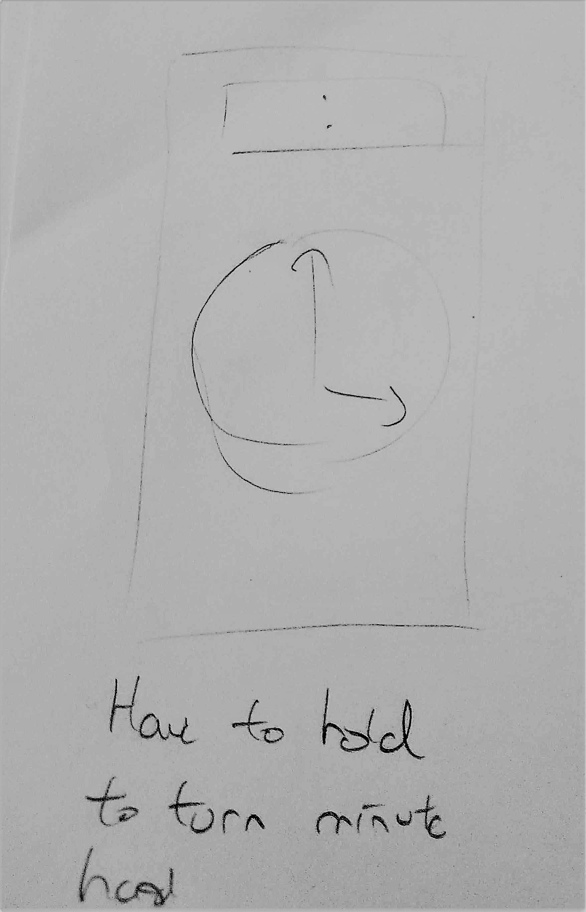
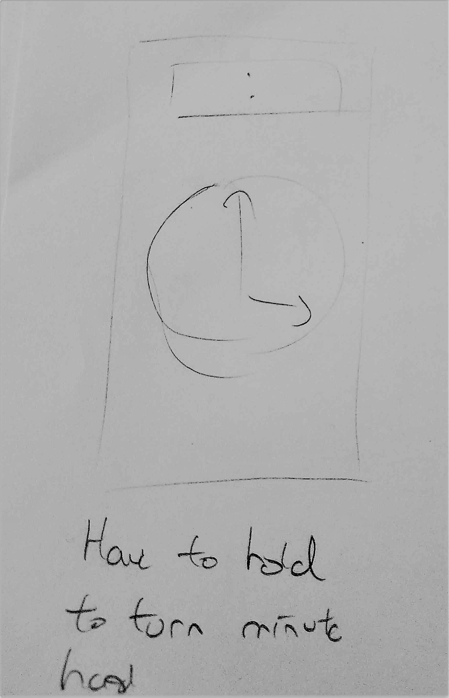
 HADIYA FIRDAUS
HADIYA FIRDAUS